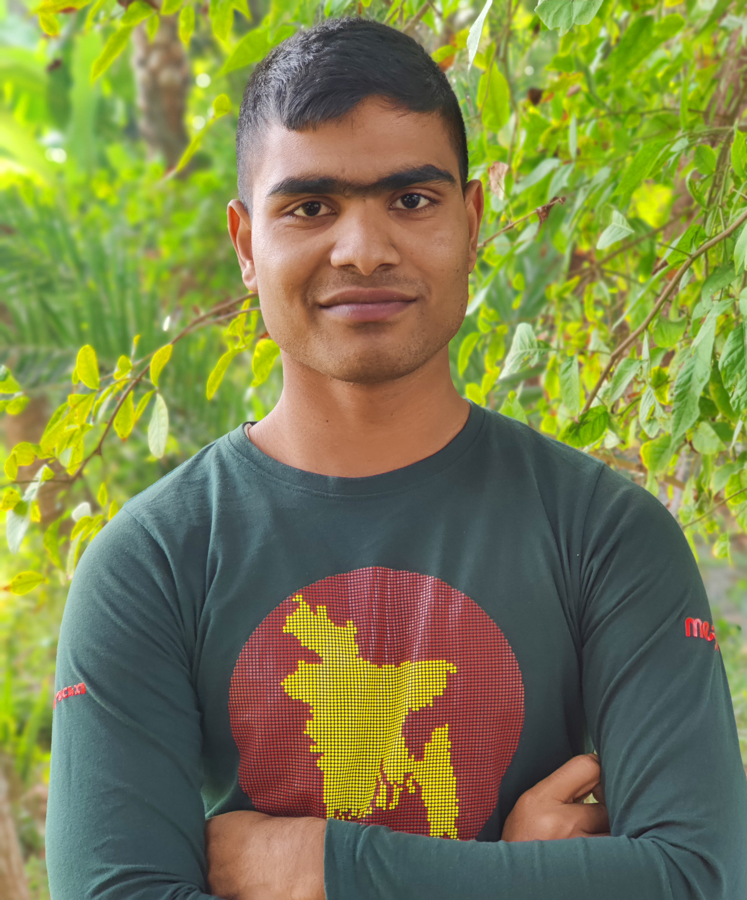

Our Team
Yakub Ali

Junait Islam
ইয়াকুব আলী মোল্যা (অ্যাডমিন): তিনি ১৯৭১ সালের মুক্তিযুদ্ধে সরাসরি অংশ গ্রহণ করেন এবং তিনি একাই দেশ স্বাধীন করে ফেলেন। ব্যক্তিগত ভাবে তার বাড়িতে পাঁচটি টিনের গরুর খামার, ৫ম তলা বিশিষ্ট পুকুর এবং গোলা ভরা মাছের চাষ রয়েছে।
জুনায়েত ইসলাম শিপন (ডেভেলপার): জীবনটা গণিতের মতো হয়ে গেছে! সবাইকে যোগ, বিয়োগ, গুণ, ভাগ করে সবকিছু দেওয়ার পর নিজের জন্য পড়ে আছে শুধু শূন্য। কিছু সম্পর্ক আল্লাহ নষ্ট করে দেন; যাতে আমাদের জীবন নষ্ট না হয়। যে তোমার নীরবতা দেখে মন খারাপ বোঝে না, তাকে রচনা লিখে দিলেও বুঝবে না৷